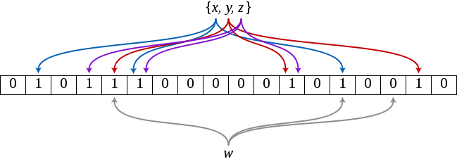

布隆过滤器五分钟入门
缘起 之前在公司的一场技术分享上，有位大牛讲到了布隆过滤器。虽然之前有所了解，但只是停留在代码实现上，还没有去深入探究它存在的合理性和应用场景上。所以借着这个机会重新捋捋脉络，便有了这篇文章。 原理 维基百科上的描述如下： A Bloom filter is a space-efficient probabilisti…
布隆过滤器五分钟入门
缘起
之前在公司的一场技术分享上，有位大牛讲到了布隆过滤器。虽然之前有所了解，但只是停留在代码实现上，还没有去深入探究它存在的合理性和应用场景上。所以借着这个机会重新捋捋脉络，便有了这篇文章。
原理
维基百科上的描述如下：
A Bloom filter is a space-efficient probabilistic data structure, conceived by Burton Howard Bloom in 1970, that is used to test whether an element is a member of a set. False positive matches are possible, but false negatives are not – in other words, a query returns either "possibly in set" or "definitely not in set". Elements can be added to the set, but not removed (though this can be addressed with a "counting" filter); the more elements that are added to the set, the larger the probability of false positives.
翻译过来就是：布隆过滤器由 Bloom 在 1970 年提出，它是一个非常节省空间的数据结构，且被用来测试一个元素是否在一个集合中。如果它告诉你「不在」，那就一定不在集合中；但如果它告诉你「在」，那也有可能不在。并且你可以向集合中添加更多的元素，但由此会带来更高的误判率。你也不能从集合中删除元素。
算法描述
通常我们去判断一个元素是否在集合中的方法是：将这个元素逐一与集合中的所有元素对比，但这种方法的时间复杂度为 $O(n)$，所以随着元素数量的增长，查询效率会下降。但布隆过滤器则通过 hash 的方法去查找，所以会快很多。
布隆过滤器本质上是一个很长的二进制数组，数组中每一个元素都是 0 或者 1，类似于 STL 中的 bitset，初始值都为 0。向集合中添加元素时，它将待查找的元素经过 k 个哈希函数的映射，得到 k 个值为（$v_1$,$v_2$....$v_k$) 的一个向量，对该向量的每一个值所对应的下标的数组元素置为 1。之后在查找某个元素时，也将这个元素经过同样的 k 个哈希函数，并检查是否这些值对应的数组下标都为 1。只要有一个是 0，则该元素肯定不在集合中；如下图，集合 {x,y,z} 经过三个哈希函数分别映射到数组下标 1，3，4，5，11，13，16 位置上，元素 w 映射到下标 4，13，15 位置上，由于 array[15]==0，所以 w 不在集合 {x,y,z} 中。反之，如果都为 1，则该元素有一定的概率 $P$ 在集合中，$1-P$ 的概率不在。因为当集合中元素很多的时候，数组中这 k 个元素可能是由其他元素置位的，导致误判。至于这个概率 $P$ 是多大，跟集合中元素数量 s、数组大小 m 和选取的 k 个哈希函数都有关。

- 元素数量 n 越少，生成的 k 个哈希值碰撞的可能就越小，判断也就越准确；
- 数组长度 m 越大，生成的 k 个哈希值碰撞的可能也就越小，判断也就越准确；
- k 个函数选取越准确，生成的 k 个哈希值碰撞的可能越小，判断越准确；
由此可见，这三个因素都归并到了「哈希碰撞」这个问题上。所以布隆过滤器的设计过程很大程度上就是一个好的哈希算法的设计过程。
哈希算法
一个哈希算法由一个哈希数组、哈希函数组成。其思想是将元素经过哈希函数映射到数组中。但元素集合在很多情况下是无限或接近于无限的，而数组空间是有限的。这便必定产生矛盾--即碰撞。从逻辑上说，所有的哈希算法都是无法避免碰撞的（从无限集到有限集的映射），但应该尽可能地减少碰撞。
当碰撞发生时，常见的处理方法有：开链法和闭散列法。开链法就是将映射到同一下标的所有元素形成一个链表，挂到该位置下面；闭散列法就是将冲突的元素按照某种方式向后排放。这两种方法都有弊端，开链法在极端情况下又会形成链表，时间复杂度也上升到了 $O(n)$。一种优化方法是当链表长度超过某一个值时，自动构造成一棵平衡树，但这并没有改变开链法的本质。闭散列法由于占用了其他元素的空间，当元素很多时就会没有空间可用，且会引起雪崩效应，即这次碰撞会影响到下个本来映射到该位置的元素。
由此引出「负载因子」的概念。所谓负载因子，就是当前哈希表中存放的元素数和数组长度的比值。一般来说，负载因子超过 0.8，就需要对哈希表扩容。即重新构造一个更大的数组，将所有元素转移过去，再释放原有空间。
误判概率
让我们回到布隆过滤器上，计算一下对一个元素是否在集合中误判的概率。
首先我们假设，待插入容器中的元素个数为 n，布隆过滤器的比特位数为 m，哈希函数个数为 k，并假设 k 个函数是独立的。那么在插入元素到容器中时，对任一个比特位而言，某个函数设置该位为 1 的概率是
$$\frac{1}{m}$$
则不为 1 的概率是
$$1-\frac{1}{m}$$
那么经过 k 个哈希函数该位仍然未被设置为 1 的概率是
$$(1-\frac{1}{m})^k$$
插入 n 个元素后，某个位仍然不为 1 的概率是
$$(1-\frac{1}{m})^{nk}$$
因此，这时候某个位为 1 的概率是
$$1-(1-\frac{1}{m})^{nk}$$
这时候 n 个元素插入完成。我们来测试某个元素不在容器中，但被误判的概率 $P$，也就是该元素经过 k 个哈希函数得到的向量中每一个元素对应的位置都恰好被其他元素置为 1 的概率：
$$P=[1-(1-\frac{1}{m})^{nk}]^k$$
根据公式
$$ \lim_{x \to \infty}(1+x)^{\frac{1}{x}} \approx e $$
我们有
$$(1-\frac{1}{m})^{nk}=(1-\frac{1}{m})^{nk \times \frac{-m}{-m}}=((1-\frac{1}{m})^{-m})^{-\frac{nk}{m}} \approx e^{-\frac{nk}{m}}$$
可得
$$P \approx (1-e^{-\frac{nk}{m}})^k$$
哈希函数的最佳个数k
前面求得
$$P \approx (1-e^{-\frac{nk}{m}})^k$$
我们令
$$b=e^{\frac{n}{m}}$$
可得
$$P=(1-b^{-k})^k$$
两边同时取对数得
$$\ln P=k \times \ln(1-b^{-k})$$
然后两边同时对 k 求导，有
$$\frac{1}{P} \times P^{'} = \ln(1-b^{-k})+k \times \frac{b^{-k} \times \ln b}{1-b^{-k}}$$
令其值为 0，解得
$$k=\frac{m}{n} \times \ln 2$$
可以看出，当 $k=\frac{m}{n} \times \ln 2 = 0.7\frac{m}{n}$ 时误判率最低，此时误判率 $P=0.6185 \frac{m}{n}$
[画外音：这个数字熟悉不]
所以要使得误判率不变，添加到容器中的元素个数应该和数组长度线性增加的。
布隆过滤器的使用场景
布隆过滤器实际上是一个二进制数组，其本质是一个容器。所以其主要功能是判断一个元素是否存在于集合中。
传统的容器也能达到这个目的，比如数组、链表、哈希表、红黑树等数据结构。但这些数据结构在存储元素时，至少要存储元素本身，这就决定了传统数据结构在空间复杂度上的劣势。而且在查找元素时，数据、链表都是顺序查找，时间复杂度为 O(n)，红黑树为 O(lgn)，他们在时间复杂度上也处于劣势。哈希表好点，为 O(1)，但哈希表存在碰撞的因素，当数据量越来越大时，其时间复杂度会退化到 O(n) 或 O(lgn)。
所以布隆过滤器适用于大数据量、高效、对误判不敏感的场景。具体有：
- Google 的分布式数据库 Bigtable 使用布隆过滤器来减少对磁盘的 I/O 次数。当一次查询请求到来时，先在 bloom filter 中查找，若不存在则直接返回，可以提高性能；
- 网络爬虫程序中，需要对抓取到的 URL 进行遍历。若该 URL 之前已经访问过，则可以快速从 bloom filter 中感知到并跳过，否则访问之并加入到 bloom filter 中。当然，出现小概率误判时，don't care it.
- 黑名单过滤。比如在网络请求中，可以将恶意访问的用户 id 或 IP 加入到布隆过滤器中，以阻止这些访问请求，起到防刷的作用。这里布隆过滤器的作用主要是降低黑名单的存储成本。类似的，还可以用于垃圾邮件过滤、垃圾短信过滤、恶意网址过滤等。